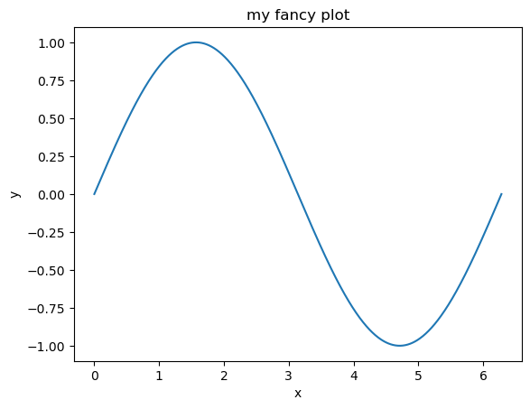

"CSCI" + " 0451"'CSCI 0451'Phil Chodrow
January 10, 2023
This is an example of the blog posts that you’ll submit as your primary form of learning demonstration in CSCI 0451. I created this post by modifying the file posts/example-blog-post/index.ipynb in VSCode. You can also use JupyterLab for this editing if you prefer. Finally, it is possible to write blog posts without using notebooks by writing .qmd files, as illustrated here.
Your notebook needs to contain some metadata: things like the title, author, date, etc. You specify this in a raw cell at the very beginning of the notebook. In this notebook, the contents of this cell is:
---
title: Hello Blog
author: Phil Chodrow
date: '2023-01-10'
image: "image.jpg"
description: "An example blog post illustrating the key techniques you'll need to demonstrate your learning in CSCI 0451."
format: html
---Frontmatter can be fiddly (it’s sensitive to spaces, for example), and so the best approach is usually to copy and paste it from previous blog posts, modifying it as appropriate.
To run Python code, place your code in a Python code block inside your notebook. You can run the code block inside VSCode (or JupyterLab) using the keyboard shortcut ctrl + Enter. You’ll see the result of your computation below the code, including the value of the most recent statement.
We’ll have lots of opportunities to make data visualizations in this course. These also display inside the notebook, and get converted into your blog post:
from matplotlib import pyplot as plt
import numpy as np
x = np.linspace(0, 2*np.pi, 1001)
y = np.sin(x)
fig = plt.plot(x, y)
xlab = plt.xlabel("x")
ylab = plt.ylabel("y")
title = plt.gca().set(title = "My Fancy Plot")
Another thing we’ll often do is implement an algorithm in a source file (i.e. a .py file) and then use it in a notebook. To do this, just place the .py file in the same directory as the notebook. For example, the file source.py in the same directory contains a custom function (which prints a message). I can use like this:
You can use Markdown syntax to write text in Markdown cells. Markdown allows you to create simple text formatting like bullets, italics, and section headers. The Quarto description of markdown basics has everything you need to get started.
In addition to regular text using the Markdown specification, you can also write mathematics, enclosed between dollar signs. The syntax for writing math is very similar to the syntax used in the \(\LaTeX\) markup language. For example, $f(x) \approx y$ renders to \(f(x) \approx y\). To place complex mathematical expressions on their own lines, use double dollar signs. For example, the expression
$$\mathcal{L}(a, b) = \sum_{i = 1}^n (ax_i + b - y_i)^2$$
renders to:
\[\mathcal{L}(a, b) = \sum_{i = 1}^n (ax_i + b - y_i)^2\;.\]
Behind the scenes, math is powered by the MathJax engine. For more on how to write math, check this handy tutorial and quick reference.